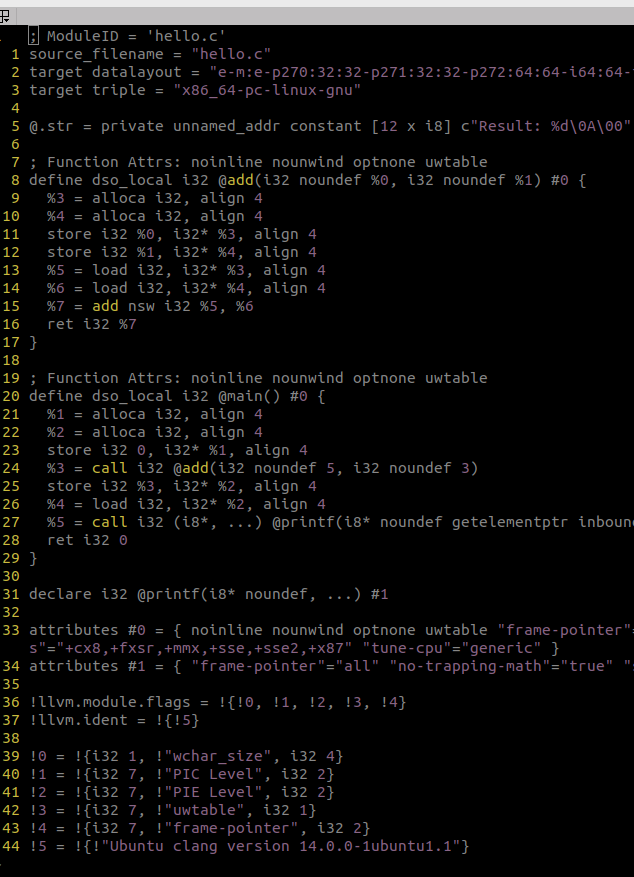

Low-Level Virtual Machine(LLVM)
LLVM (Low-Level Virtual Machine) is a collection of tools and technologies designed to help
programmers build software more efficiently. Imagine you are writing a program in a high-level
language, like C++ or Python. Before the computer can run your program, it needs to convert it
into something it understands, which is machine code (the language of 1s and 0s). This process
of converting your program into machine code is called "compilation."
LLVM helps with this process, but instead of just creating machine code for one specific
type of computer, it creates something called "Intermediate code." This intermediate code can
then be converted into machine code for many different kinds of computers. This flexibility is
one of LLVM's superpowers.
To put it simply, LLVM is like a translator for computer programs. It helps take programs
written in different programming languages and makes sure they can run on different types of
computers smoothly. This is useful for things like making software run faster, work on different
devices, or even improve the security of the code.
So, think of LLVM as a tool that helps programmers make their code work better across different
machines and platforms!
Intermediate Representation (IR)
LLVM's core strength lies in its Intermediate Representation (IR), which is a low-level,
platform-independent code representation. The IR can be thought of as a form between source code
(like C++ or Python) and machine code (specific to a CPU architecture). The beauty of IR is that
it allows code optimizations to be applied at various stages of compilation without being tied
to a specific machine's architecture.
* Static Single Assignment (SSA) form: LLVM IR is represented in SSA form, which
makes optimizations easier to implement and reason about.
* Three-phase compilation: Frontend (generates IR from source), Optimizer (improves
IR), and Backend (generates machine-specific code from optimized IR).
Frontend, Optimizer, Backend
* Frontend: This part converts the source code written in a high-level language (e.g., C,
C++, Rust, Swift) into LLVM's IR. There are many frontends like Clang (for C/C++), which use
LLVM to generate IR.
* Optimizer:The optimizer takes the IR and applies a series of transformations to
make the code faster and smaller. This includes loop unrolling, constant propagation, dead code
elimination, etc.
* Backend: Finally, the backend converts the optimized IR into machine code for a
specific architecture (x86, ARM, etc.). LLVM supports a wide range of architectures, making it
highly portable.
Modular Design
LLVM is highly modular. It provides APIs and libraries for each stage of compilation, so developers can pick and choose which parts of LLVM they want to use. This makes it possible to integrate LLVM into a wide variety of tools beyond compilers, like code analysis tools, interpreters, and Just-In-Time (JIT) compilers.
Just-In-Time (JIT) Compilation
LLVM also supports JIT compilation, meaning it can compile code dynamically at runtime. This feature is used in environments where performance is critical, such as in virtual machines (VMs) like those used in languages like JavaScript, Python (e.g., PyPy), or gaming engines.
Implementation
Let's break down how LLVM works by using a simple C code example. We’ll go through the frontend, optimizer, and backend stages as LLVM would handle it.
hello.cNow let's walk through how LLVM would process this:
1. Frontend: Generating LLVM Intermediate Representation (IR)
When you compile this C code using a frontend like Clang (which uses LLVM), the first step is to
convert the high-level C code into LLVM Intermediate Representation (IR). This IR is
machine-independent and easier for LLVM to optimize.
To see the IR, you can run this command:

Here,
-S: Instructs Clang to generate an intermediate file instead of an object file.
-emit-llvm: Tells Clang to emit LLVM IR rather than native assembly or machine code.
-o hello.ll: Specifies the output file (hello.ll) to store the LLVM IR.
This will produce an .ll file that contains the LLVM IR for the code. Here’s a simplified version of what the LLVM IR for our C code might look like:
What’s happening here?
add function: The C function add is represented with LLVM IR instructions. For example, %0
= add i32 %a, %b is an IR instruction that adds the two integers.
main function: The main function calls add(5, 3), stores the result in %result, and
then prints it using printf.
2. Optimizer: Improving the IR
Once we have the IR, LLVM's optimizer can apply various transformations to make the code more efficient. These optimizations can include removing unnecessary code, simplifying expressions, and more. For example, since we know that add(5, 3) always results in 8, the optimizer could simplify this:
Before optimization: %result = call i32 @add(i32 5, i32 3)After optimization: %result = i32 8
LLVM can run optimizations using: opt -O2 hello.ll -o optimized.ll
What’s happening?
The optimizer can replace function calls with constant values if it can deduce the result
(constant propagation).
It can remove any dead code (code that doesn't affect the program outcome), like unnecessary
calculations.
3. Backend: Generating Machine Code
Finally, once the IR has been optimized, LLVM converts the IR into machine code specific to the
target platform (like x86, ARM, etc.). This process is done by the backend.
You can generate the assembly or machine code using:
This command produces an executable file that your machine can run. It converts the optimized IR into instructions specific to your computer’s CPU architecture (e.g., x86 or ARM assembly instructions). If we run this executable file i.e hello then we get desire output using llvm.
Application
Compiler toolchains: Clang, Rust, Swift use LLVM as their backend.
Language development: If you're developing your own programming language, LLVM simplifies
the process of generating efficient machine code.
Optimizers: LLVM can be used to optimize existing codebases.
JIT execution: Used in environments requiring runtime compilation, like virtual machines.
Summary
In short, LLVM abstracts the process of generating machine code for different architectures and provides an extensible framework for optimizations and runtime compilation. It has become an essential part of modern compilers due to its portability, performance, and ease of use in multiple programming contexts.